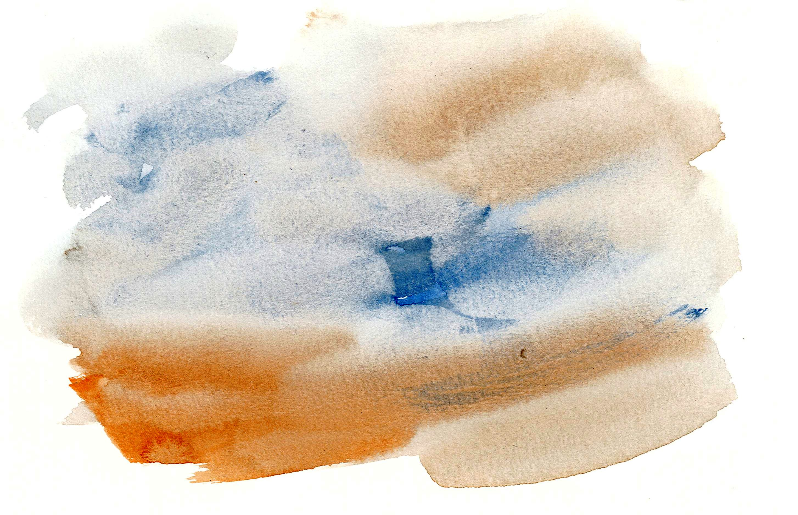

Dear Sir/Madam,
You are invited to answer this online questionnaire as part of a research project on the perception of urban complexity. The estimated completion time for this online survey is 10 minutes. You are asked to sort a gallery of 25 photos based on the visual complexity of each urban scene.
| Low complexity |
Medium complexity |
High complexity |
|  |
 |
 |
In order to respect the rights and freedoms of individuals, the authors of this research guarantee complete anonymity of the data collected for the analysis of the results.
We - P. Florio (EPFL), T. Leduc (UMR 1563 AAU), Y. Sutter (UMR 1563 AAU) and R. Brémond (Univ. Gustave Eiffel) - are very grateful for your time.
Yours sincerely,